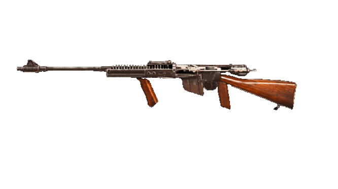

Doporučený loadout
Muzzle
MX SILENCER
Barrel
LOR MK1 BURST
Optic
SVT-40 PU SCOPE 3-6X
Stock
ORBWEAVER E PACKD
Underbarrel
M1941 HAND STOP
Magazine
6.5MM SAKURA 50 ROUND MAGS
Ammo Type
LENGTHENED
Rear Grip
POLYMER GRIP
Perk 1
BRACE
Perk 2
FULLY LOADED
Foto
Statistiky
Reálné informace
NZ-41 reálně pojmenována Charltonova automatická puška byla plně automatická konverze pušky Lee-Enfield, kterou v roce 1941 navrhl Novozélanďan Philip Charlton jako náhradu za lehké kulomety Bren a Lewis gun, kterých byl v té době velký nedostatek.
Původní automatické pušky Charlton byly přestavěny ze zastaralých pušek Lee-Metford a zásobníkových pušek Lee-Enfield, které pocházely již z búrské války, a byly určeny k použití jako poloautomatické pušky s možností použití plného automatu pro nouzové použití. Používaly se zásobníky Lee-Enfield na 10 nábojů a upravené zásobníky Bren na 30 nábojů. Zbraň nebyla nikdy určena k použití jako frontová bojová zbraň, místo toho byla navržena a přijata především pro novozélandskou domobranu.